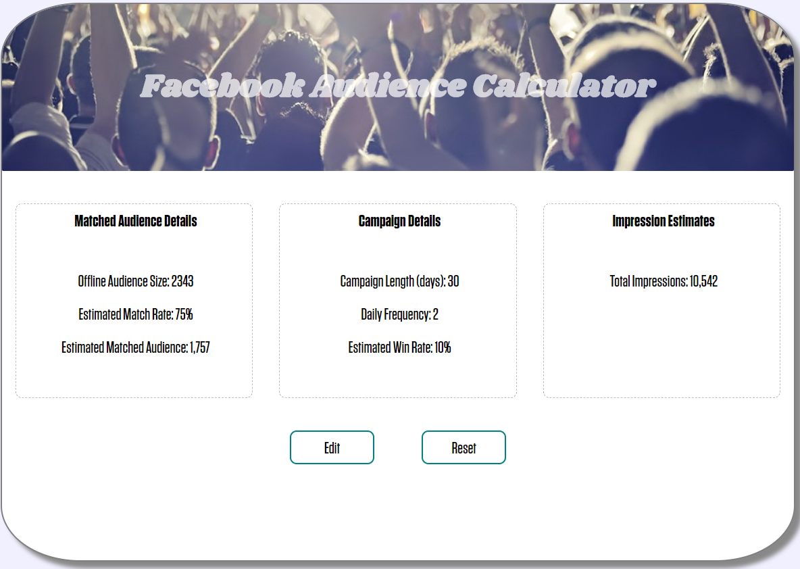

Created:
1 The What:
A tool for team members to estimate how many people they can expect to target on Facebook and how many impressions they could potentially deliver.
2 The How:
The Facebook Audience Calculator was a side project meant to tie together my learning with my current role. It was actually written in Python as a command line program initially. However, once I realized that I could not distribute Python to the team due to network restrictions, I translated it to JavaScript and built a simple UI.

Above you see the origination of the calculator, a boring Excel-based solution. While it did the job, it was not very user-friendly and not very dynamic. My goal was to set out to create something more visually pleasing, easier to follow and something the sales team could potentially use in client conversations.
3 The Result:
After sharing the calculator with some team members in passing, I was encouraged to present the app at a monthly meeting I host with the Executive & Management team. The feedback has been positive and we are currently identifying the best way to bring it into the daily workflow of the wider team.
Looking ahead, I will be making improvements to the app, including the ability to forecast costs. Keep an eye out for new changes!